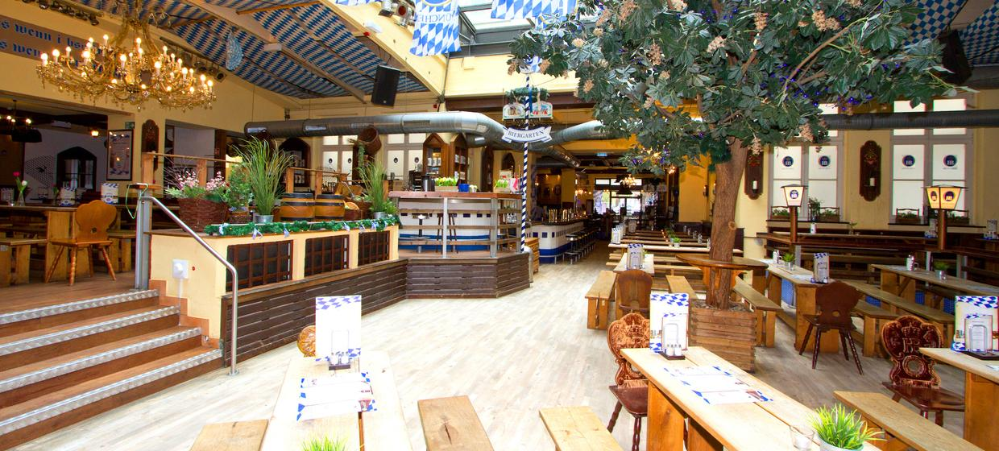
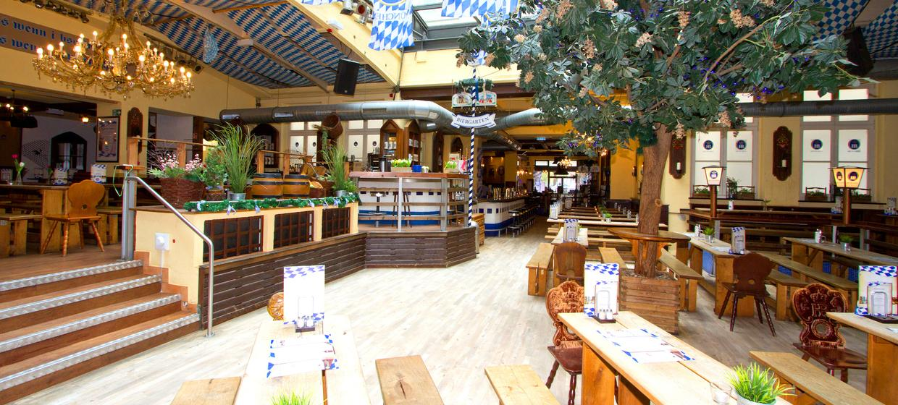

Experimente um pedaço do estilo de vida bávaro no coração da capital. Você é recebido diretamente na Alexanderplatz com refeições saudáveis, cerveja Hofbräu original de Munique, música ao vivo e garçons em trajes reais. Experimente a atmosfera pura da Oktoberfest 365 dias por ano! Desde a Weißwurstl original de Munique até a carne de porco assada e as iguarias originais austríacas e suábias - experimente pratos preparados na hora e criativamente do sul diretamente para nossa bela capital. Fuja da agitação e desfrute de uma cerveja gelada. fresca do barril, claro,
Segunda a quinta e domingos: 11:00 às 00:00
Sexta e sábado: 11:00 às 01:00
Marisa Lopes:
Conheci por meio de um amigo! Um dos melhores italianos da cidade! Grande anfitrião que também é o cozinheiro e especialista em vinhos! Posso recomendar sem reservas!
Nota:
Lucca Peter:
Adoramos ir a Bragato; desfrute do belo ambiente, da excelente cozinha italiana, da vasta gama de vinhos e do serviço comprometido e cordial. A venda fora de casa é um ponto brilhante na era Corona! 👍
Nota:
Susanne Louis:
Não é o restaurante mais barato. É muito bom. A comida é deliciosa e o serviço é muito amigável.
Nota:
 Clique aqui para expandir o cardápio
Clique aqui para expandir o cardápio
https://www.hofbraeu-wirtshaus.de/
Karl-Liebknecht-Str. 30, 10178 Berlin, Alemanha